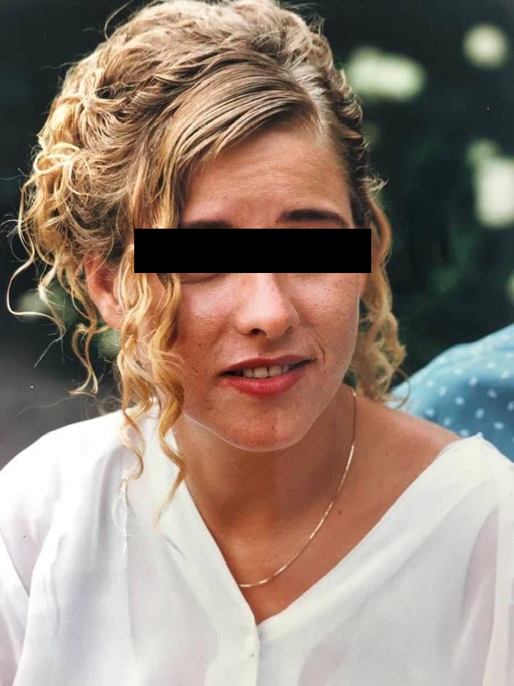

FRA MOR
JEG ER BLEVET SKILT FRA MINE BØRN
Da verden var kold
Og vi kun havde hinanden
Da jeg kæmpede mig op ad Ravnsborggade
Var et øjeblik med jer
Det eneste jeg ville have
For mig var I
Lysglimtet i vinternatten
Glimtet der hjalp mig
Gennem lettelsens sorg
En pinefuld frihed
Men når dagen ender
Forsvinder I igen
Tomhullet prøver jeg at fylde med stress
Arbejde, opgavelæsning, undervisning, rettelser
Smøger, rødvin, panodiler
hovedpine, kvalme, gråd på mine veninders skuldre
Den nedadgående spiral
Post skilsmisse-depressionen
Folk omkring mig fortæller mig det sker for alle
De ser mere bekymret ud hver gang jeg ser dem
De ser hvordan jeg vakler i mørket
Min endeløse vandring op og ned ad Ravnsborggade
Hvordan jeg mister grebet om mig selv
Mere og mere hver dag
Stilheden i min lejlighed larmer mere end nogensinde
Tvivlen om beslutningen viser sig stærkere
Når jeg er alene

Børns vilkår: ForældreTelefonen: 35 55 55 57
Mig i midten: Børnenes skilsmissetelefon: 20 60 05 50
Mødrehjælpen - Skilsmisserådgivning